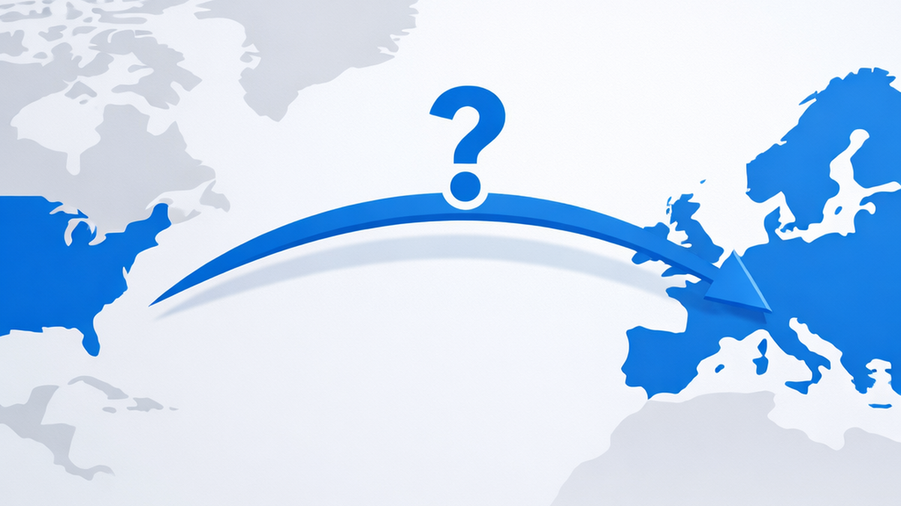

KI unter US-Jurisdiktion

AWS, Azure und Google Cloud versprechen, dass Daten in Europa bleiben. Physisch stimmt das in vielen Fällen. Rechtlich ist die Lage eine andere.
Der US CLOUD Act von 2018 verpflichtet amerikanische Unternehmen, Daten auf behördliche Anfrage herauszugeben, unabhängig davon, wo die Server stehen. Das betrifft auch Daten auf Servern in Frankfurt oder Zürich, solange der Anbieter ein US-Unternehmen ist oder dem US-Recht unterliegt. Datenstandort allein ist kein Garant für Datensouveränität.
Dasselbe gilt für KI-Dienste. Wer GPT, Claude oder Gemini über deren Cloud-APIs nutzt, verarbeitet Daten über US-Unternehmen. Auch diese unterliegen dem CLOUD Act.
Dazu kommt eine neue Entwicklung: Im Januar 2026 hat das US-Repräsentantenhaus den «Remote Access Security Act» mit 369 zu 22 Stimmen verabschiedet. Der Entwurf liegt beim Senat. Das Gesetz würde es ermöglichen, auch den Fernzugriff auf kontrollierte Technologien über Cloud-Dienste zu regulieren. Das schliesst KI ein, die über Cloud-Dienste bereitgestellt wird.

Bisher gelten US-Exportkontrollen vor allem für Hardware, insbesondere für Chips. Mit dem neuen Gesetz könnte auch der Cloud-Zugriff auf KI-Modelle reguliert werden. Wer KI über US-Cloud-Dienste nutzt, macht sich damit nicht nur vom CLOUD Act abhängig, sondern potenziell auch von künftigen Exportbeschränkungen.
Open-Source-Modelle auf eigener Infrastruktur sind von beiden Regelungen nicht betroffen. Sie sind mittlerweile leistungsfähig genug, um viele dieser Anwendungsfälle abzudecken, und lassen sich mit der aktuellen Hardware-Generation realistisch betreiben.